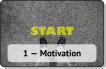

⬑ Liste aller flipped lectures. — Algorithmen und Datenstrukturen
Lektion 1: Motivation

In dieser Lektion betrachten wir die Frage, was Algorithmen und Datenstrukturen überhaupt sind, und ich möchte euch gute Gründe liefern, warum es sich lohnt, einige solche kennen zu lernen.Protokoll der Diskussion
1 – What is an algorithm?
Kurze Animation zum Begriff Algorithmus mit zwei Beispielen.
Aufgaben zur Vorbereitung:
- Was ist (laut diesem Video) ein Algorithmus?
- Wie stehen Algorithmen und Computer zueinander? Gibt es das eine ohne das andere?
- Welche Beispiele werden vorgestellt?
2 – Course Introduction
Das ist das erste Video aus dem Coursera MOOC Algorithms Part I von Robert Sedgewick und Kevin Wayne.
Aufgaben zur Vorbereitung:
- Was ist laut Sedgewick ein Algorithmus? Was ist eine Datenstruktur?
- Was sind laut Sedgewick Gründe dafür, sich mit Algorithmen zu beschäftigen? (Bring deine Liste mit zur Vorlesung!)
3 – BBC Doku: The Secret Rules of Modern Living Algorithms
Inhaltlich schön aufbereitete BBC Dokumentation über Algorithmen, und wo sie im modernen Leben eine Rolle spielen. Vieles wird nur kurz angesprochen; ich erwarte nicht, dass man die vorgestellten Algorithmen nach dieser Doku vollends verstanden hat.
Die Dokumentation ist grob aufgeteilt in eine Einführung in klassische Algorithmen, Algorithmen für schwierige Probleme (intractability) und Machine-Learning-Verfahren. A&DS beschäftigt sich mit dem ersten Teil, ein bisschen mit dem zweiten, aber nicht mit dem dritten. Als Kontext für unsere Vorlesung möchte ich aber die gesamte Doku behandeln.
Der britische Akzent ist evtl. gewöhnungsbedürftig; ihr könnt von youtube automatisch generierte Untertitel einblenden.
Aufgaben zur Vorbereitung:
- Was ist (laut dieser Doku) ein Algorithmus?
- Welche Algorithmen werden erwähnt? (Bring deine Liste mit zur Vorlesung!)
- Einige Algorithmen werden im Detail erklärt. Such dir einen davon aus und bereite dich darauf vor, diesen Algorithmus deinen Mitstudis zu erklären.